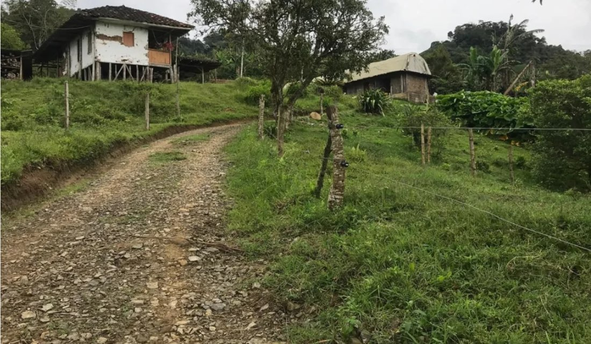
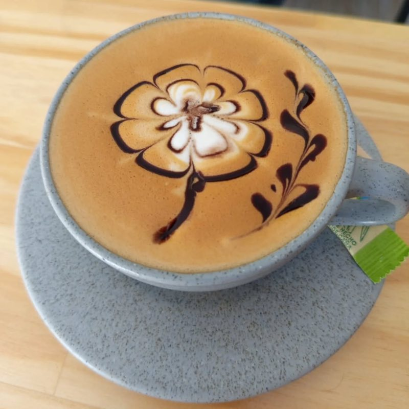
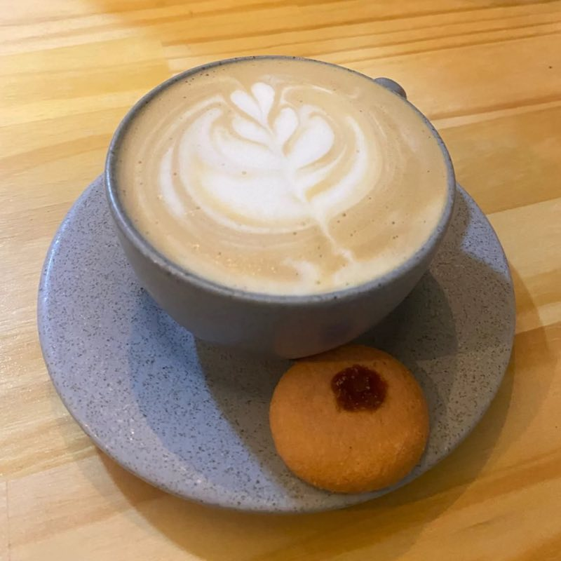
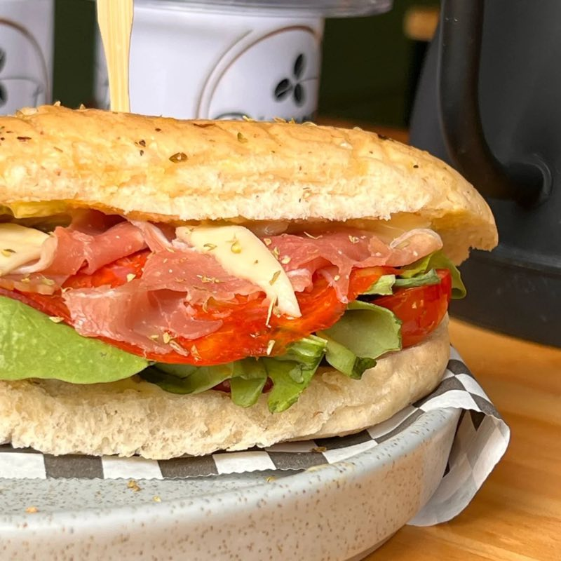
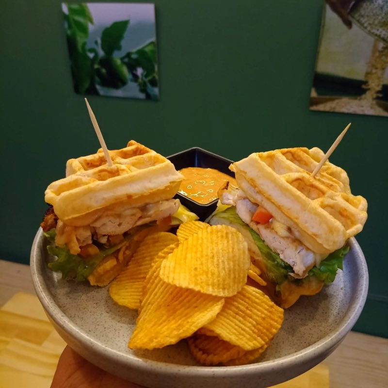
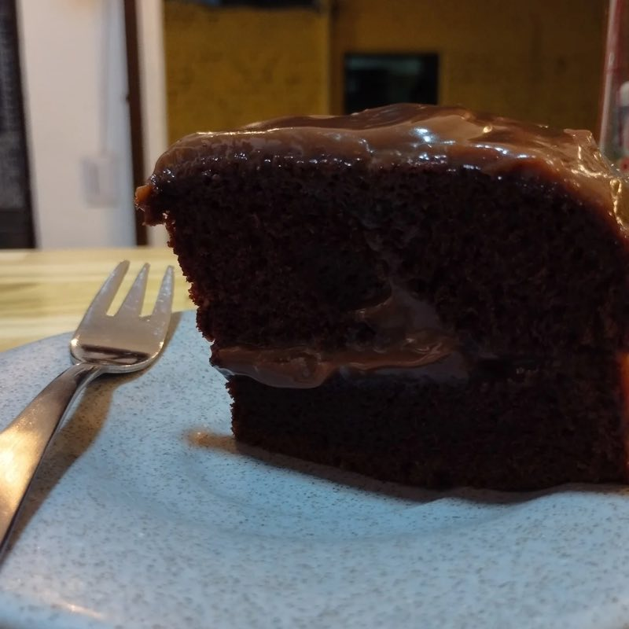
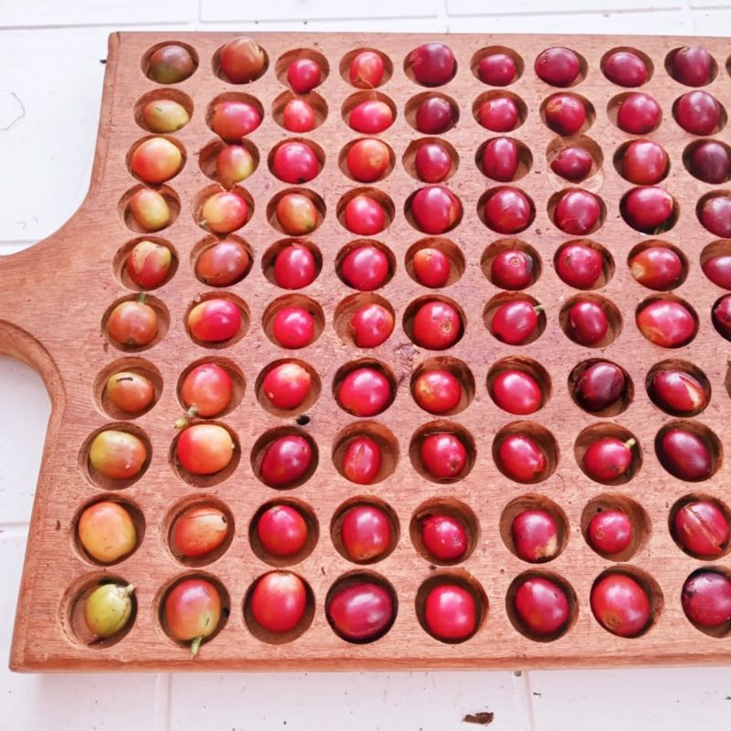
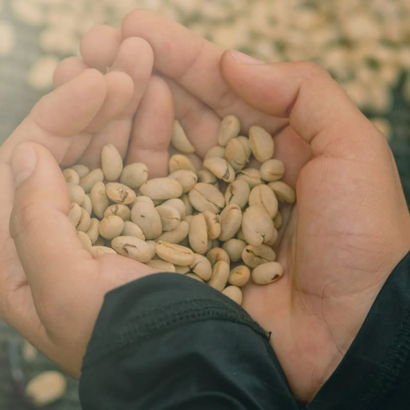

Una familia caficultora.
Nuestro café viene de nuestra finca Piamonte, en Dopo (Yotoco). Lo sembramos, lo cosechamos, lo tostamos y te lo servimos con nuestras propias manos.
- 1Siembra
- 2Cosecha
- 3Tostión
- 4Tu taza

Dicen que un café es un abrazo atrapado en una taza.
Así se ve Piamonte.
Desliza para ver más →
-

Capuchino con arte -

Latte con su galleta -

Sándwich italiano -

Waffles -

Torta de chocolate -

Cerezas de nuestra finca -

Café verde, antes de tostar
El café no solo se toma, se vive.
-
Coffee Party
Catas, música y bebidas a base de café. Una tarde para tus sentidos.
-
Reuniones
En la mañana o fuera de servicio, te recibimos para reuniones de empresa o de estudio.
-
Aprende de café
Te contamos cómo se cultiva, se procesa y se prepara.
-
Café para llevar
El café de nuestra finca, molido o en grano, en bolsas de 250 g y 500 g. También tenemos bonos de regalo.
Te esperamos en Yotoco.
- Horario
- Miércoles a domingo · 4 a 10 p. m.
- Lunes y martes cerrado